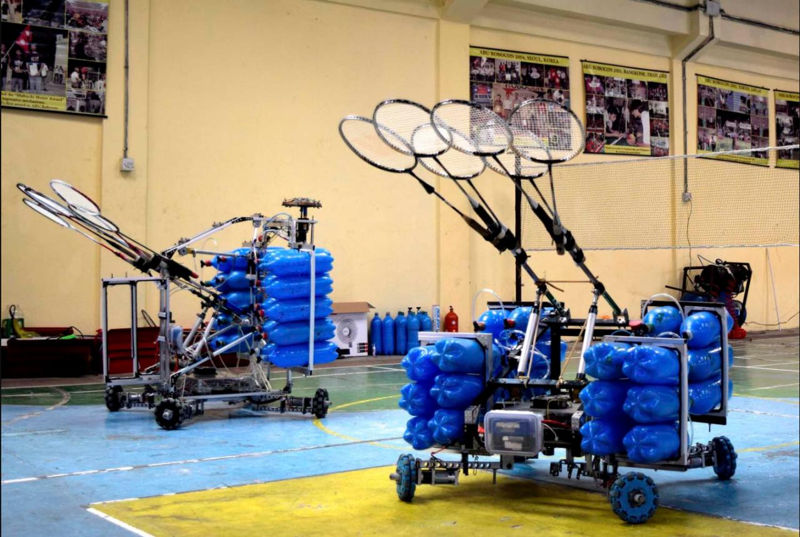

ABU Robocon Mechanical Design Leadn
Robotics Club | Institute of Engineering, Pulchowk Campus, Tribhuvan University | 2013–2016
Designed and built mechanical subsystems for robotics platforms competing in ABU Asia-Pacific Robot Contest (2014–2016).



Project Overview
As a member of the Robotics Club at the Institute of Engineering, Pulchowk Campus, I contributed to the design and development of competitive robots for the ABU Asia-Pacific Robot Contest (ABU Robocon), an international collegiate robotics competition. Student teams design and build manual and autonomous robots to complete a series of task-specific challenges within a three-minute match. I joined the Robotics Club in 2013 and made significant technical contributions during the 2015 and 2016 competition seasons, taking on mechanical design and development responsibilities.
Our Nepalese team received multiple international awards: 2015: Best Idea Award and Mabuchi Motor Award. 2016: Best Engineering Award and Panasonic Award.
Engineering Contributions
- Mechanical System Design: Designed and developed mechanical subsystems for manual and autonomous robots competing in ABU Robocon from 2014 to 2016.
- Robotic Mechanisms: Worked on high-speed pneumatic racquet mechanisms, continuous velocity variators, lightweight gantry systems, swerve drives, and multi-degree-of-freedom robotic arms.
- Specialized Mobility and Actuation: Contributed to the development of high-speed vertical pole-climbing mechanisms and robot systems capable of performing badminton-related tasks.
- Design-to-Build Development: Participated in the practical development of robotic mechanisms, translating mechanical concepts into functional competition-ready systems.
Tools and Technologies
SolidWorks | Mechanical Design | 3D Printers | Robotics | FEA | Rapid Prototyping
Media Coverage
Team Nepal Shines at ABU Robocon 2015
Nepal bags two awards in int’l robotics competition
Team Nepal bags two awards in ABU Robocon 2016